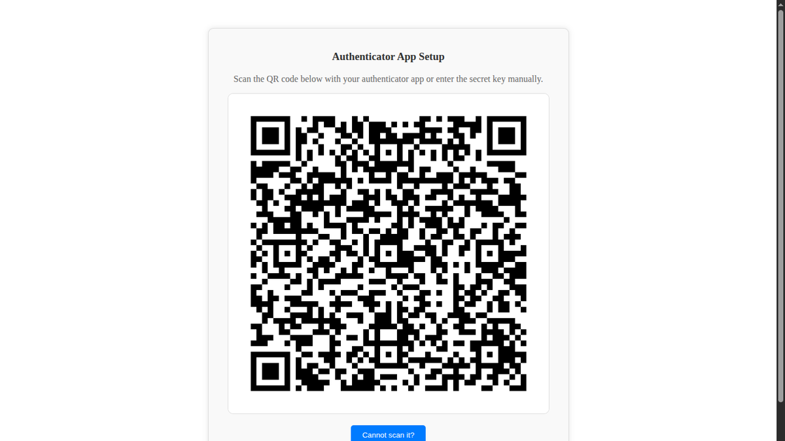

Forces every user to enable TOTP two-factor authentication on first login. Blocks system access until 2FA is configured. Compatible with any standard authenticator app.
Every user must configure TOTP before accessing the system. Existing users are prompted on next login.
Works with Google Authenticator, Microsoft Authenticator, Authy and any RFC 6238 compatible app.
Login is denied with a clear message until 2FA setup is complete. No backdoor for unenrolled accounts.
Built on top of the standard auth_totp module so all enrolment history flows through native logs.

First login forces TOTP enrolment. Scan once with any authenticator and you are in.
Questions, customisation or paid support — we’ll get back the same business day.